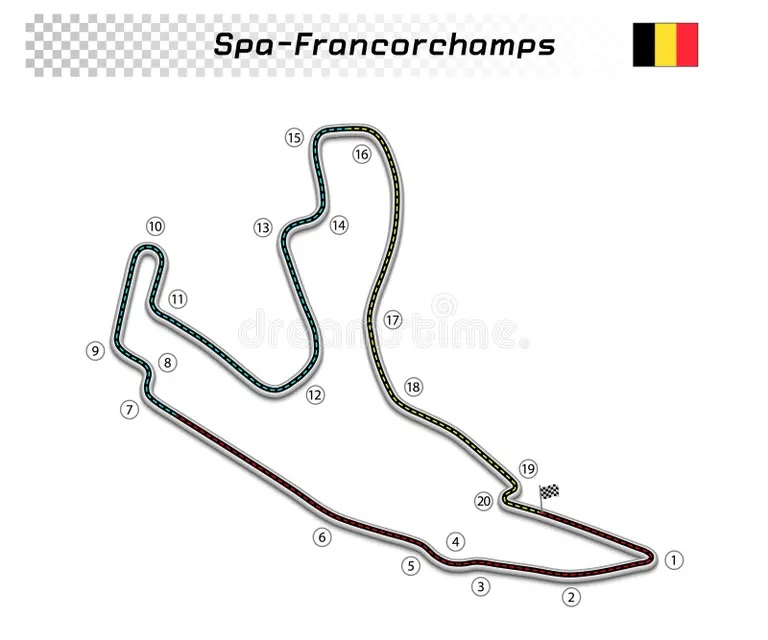
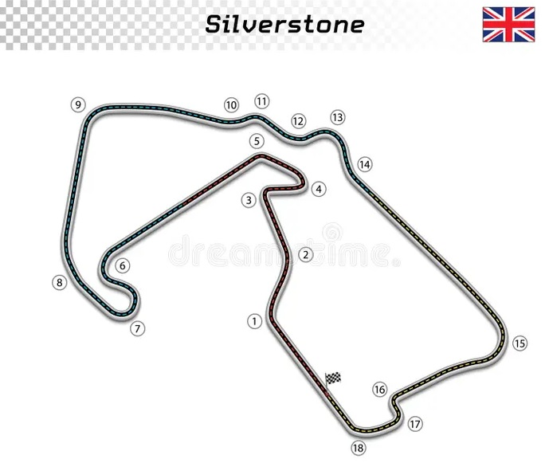

Monza - Italía
"Templo de la Velocidad." Predominio de largas rectas; requiere máxima velocidad punta. Desgaste alto en frenos.

Monaco
El más lento y estrecho. No hay margen de error. Es crucial la tracción y el downforce lento.

Sukuza - Japón
Diseño único en forma de "8". Conocido por el sector de las "S's" que exige precisión y ritmo. Desgaste alto en neumáticos.

Spa-Francorchamps - Bélgica
El circuito más largo. Combinación de rectas muy rápidas (Eau Rouge, Kemmel) y secciones técnicas.

Bakú - Azerbaiyán
Contraste extremo: recta principal muy larga y secciones muy estrechas alrededor del castillo.

Silverstone - Reino Unido
Famoso por sus curvas de alta velocidad (Magotts, Becketts). Requiere un chasis muy estable y gran carga lateral.

Hungaroring - Hungría
"Mónaco sin muros." Pista corta y revirada, casi sin rectas. Muy exigente para la refrigeración del motor y los neumáticos.